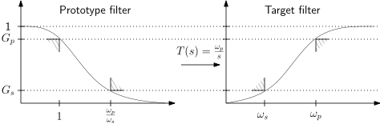
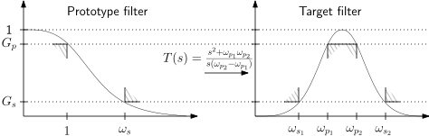
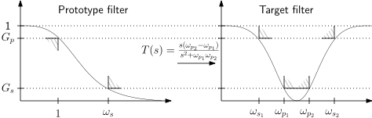

Crystals of fine salt, imaged with 150x in the FIB-SEM. UWO Nanofabrication Facility nanofab.uwo.ca/
22051
Signals and Systems in Discrete Time
Lecture 7
Reframing: Getting caught in filters
Bastian Epp
What happened last week
- Stepping forward
- Geometrical derivation of the transfer function
- Different filter types
- Filter properties in time and frequency
- Making it more systematic
- Design of IIR filters
- Time domain equivalence
- Frequency domain equivalence
What do poles do to the frequency transfer function?
One circle spans one period of the spectrum
How to get a digitial filter from an analogue one?
Impulse invariance
- Match the digital and analogue impulse response \[ h(n) = \lim_{T \rightarrow 0} Th_a(nT) \]
- Suitable for LP filters only due to aliasing at higher frequencies (or high sampling rates required)
Bilinear transformation
- Match the digital and analogue transfer function \[ \lim_{T \rightarrow 0} H(e^{sT}) = H_a(s) \]
- Frequency prewarping compensates for frequency shift
- Suitable for all types of filters due to lack of aliasing (lower sampling rates possible)
What happens in session #7
...let's dig deeper...
What is going to happen today
- Filter approximations in continuous time
- Butterworth-/Chebychev-I&II-/Elliptic- filter design
- Obtain HP/BP/BS filters from a LP filter
Small-group discussions!
Starting point: Low pass (LP) filters
The order tells us something...
Sharper in frequency, longer in time...
Butterworth approximation
Maximally flat response in passband
- Poles arranged in semi-circle in s-plane
- Characterised by cut-off frequency (-3 dB) and order
\[ |H(j\omega)| = \frac{1}{\sqrt{1+ (\frac{\omega}{\omega_c})^{2n}} } \qquad |H(j\omega_c)| = \frac{1}{\sqrt{2}} \qquad H(s) = \frac{1}{B_n(s)} \]
Chebychev I approximation
Steep transition between pass- & stopband
- Ripples in passband and steep transition band
- Characterised by order $n$ and ripple factor $\epsilon$
\[ |H(j\omega)| = \frac{1}{\sqrt{1+ \epsilon^2C_n^2(\omega)}} \qquad \hat{r} = 20 \log_{10}\bigl( \sqrt{(1+\epsilon^2)} \bigr) \qquad H(s) = \frac{K_n}{C_n'(s)} \]
Chebychev II approximation
Steep transition between pass- & stopband
- Ripples in stopband and steep transition band
- Characterised by order $n$ and ripple factor $\epsilon$
- Poles and zeros used
\[ |H(j\omega)| = \sqrt{\frac{\epsilon^2C_n^2(\omega_c/\omega)}{1+ \epsilon^2C_n^2(\omega_c/\omega)}} \qquad \hat{r} = 20 \log_{10}\bigl( \sqrt{(1+\epsilon^2)} \bigr) \]
Elliptic (Cauer) approximation
Maximally steep transition band
- Ripples in pass- and stopband
- Characterised by order $n$ and ripple factor $\epsilon$
- Poles and zeros used
\[ |H(j\omega)| = \frac{1}{\sqrt{1+ \epsilon^2R_n^2(\omega)}} \]
High-pass filter
Invert and scale
Band-pass filter
Move, invert and scale
Band-stop (notch) filter
Move, invert and scale
A short (!) round re mid-term!
Take some minutes to identify the main aspects re:
How did you perceive the level of the first assignment?
Was it "way to easy" (0), "way too hard" (10) or somewhere inbetween?
0 |----------------------------------------------------| 10
- How can we improve feedback for you?
- How can we improve that we use each other as a resource?
- LEARN, CHAT, group work, ...
- What is it that keeps you most from learning more in this course?
- What is you would like - but don't get - in this course until now?
- "Guiding solutions" on the CHAT helpful?
...nothing is "correct" or "wrong" here - I take this as a speedy input into the second half of the course...
Crystals of fine sugar, imaged with 50x in the FIB-SEM. UWO Nanofabrication Facility nanofab.uwo.ca/